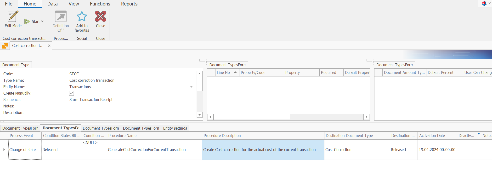
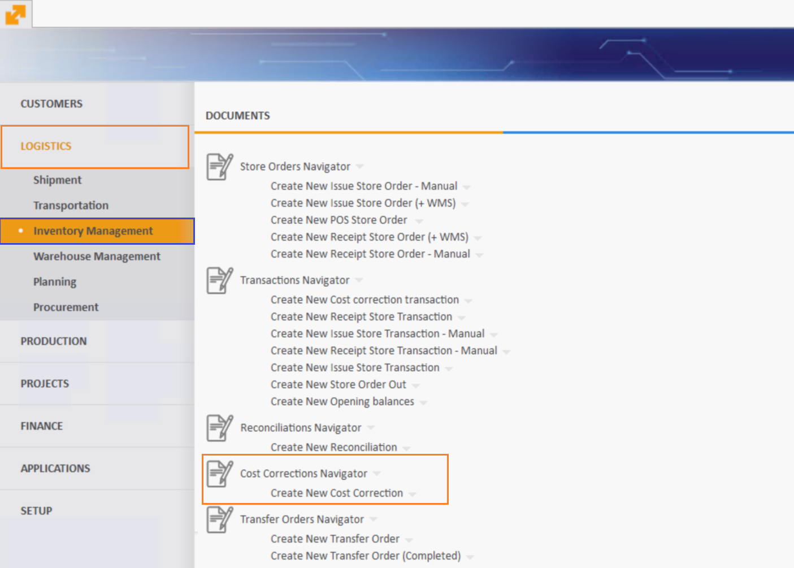
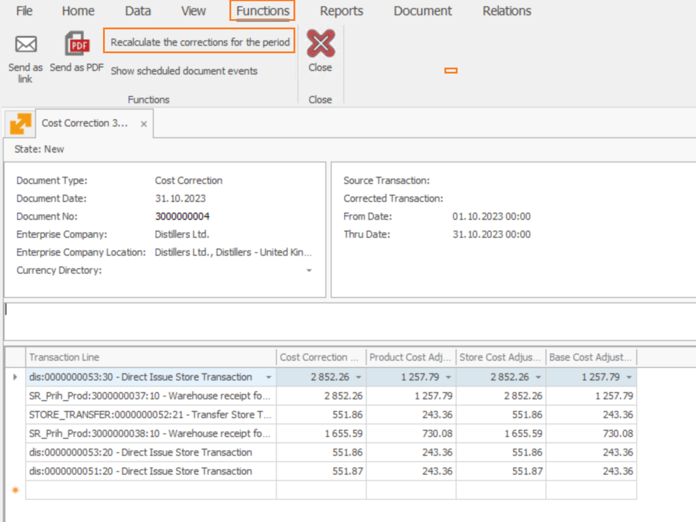
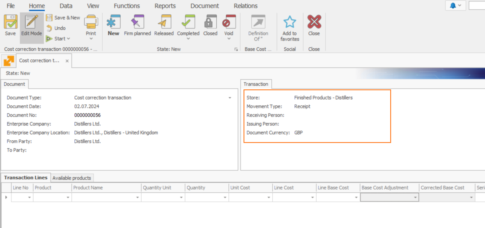
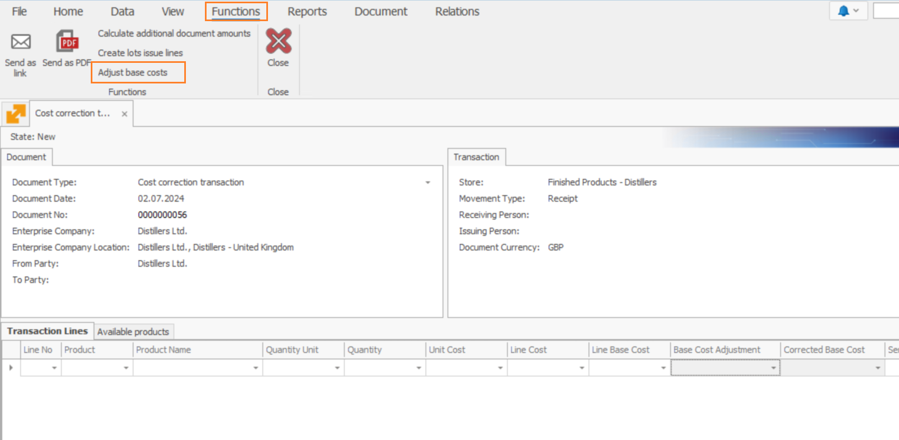
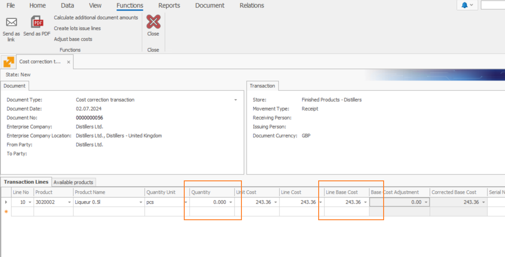
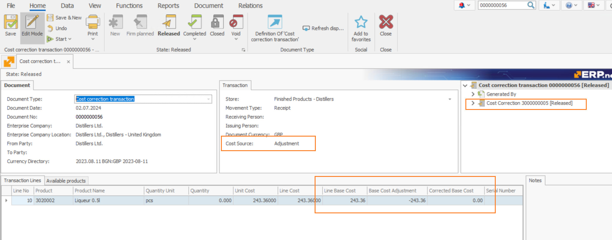

Adjust base costs
The Adjust base costs function is responsible for aligning the Original Cost of store products with their Base Cost. It achieves this by simultaneously deducting the Base Cost Adjustment of every product and adding it to its associated Line Base Cost.
This speeds up the process of processing transactions, allowing them to assume the correct (or most correct) base costs of products. It also limits the need to make frequent cost corrections due to accumulated discrepancies between original and base cost calculations.
Preliminary Setup
1. Create a New Document Type
- Create a new Document type of Inventory Transaction entity where the function will be invoked. This document type will be unified across the database and applicable to all stores.
- The document will not generate accounting entries but will generate a Cost Correction for the current document.
2. Configure Document Route for Cost Correction
- In the newly created document type, set up a Document Route for generating the Cost Correction for the current document.
- The goal is to transfer the cost brought in by the function from "Line Base Cost" to "Base Cost Adjustment" with opposite sign ensuring the total Adjusted Cost of the document remains zero.
After executing the function and processing the document, the cumulative Corrected Cost for this inventory transaction will stay at zero, meaning the cost in the store will not change.

Using Adjust base costs
Here, you'll find detailed steps on how to effectively perform base cost adjustment.
1. Create a Cost Correction document
You first need to create a cost correction responsible for adjusting your stores' costs over a specified period.
This is typically done once every month.

Fill in the from and thru date of the period and click Save.
Then, navigate to the Functions tab and select Recalculate corrections for the period.

Once prepared, Release the document.
2. Create a Cost correction transaction
Start creating a cost correction transaction using the document type you've created.
Required fields are:
- Store - the store for which the transaction will be issued
- Movement Type - set as Receipt
- Document Currency - main currency of the enterprise company
- Cost Source - source of the document, set automatically; after the function is applied, it changes to Adjustment.

3. Apply the function
Save the document, navigate to Functions and select Adjust base costs.

The function will load all available products from the selected store whose base costs are different from their original line costs.

It is only after releasing this transaction that it will match their current base costs with their adjusted costs.
Values added to the Line Base Cost will be simultaneously subtracted from the Base Cost Adjustment.

Note
Following a recent application of the function, transactions will now assume the correct (or most correct) base costs of products.